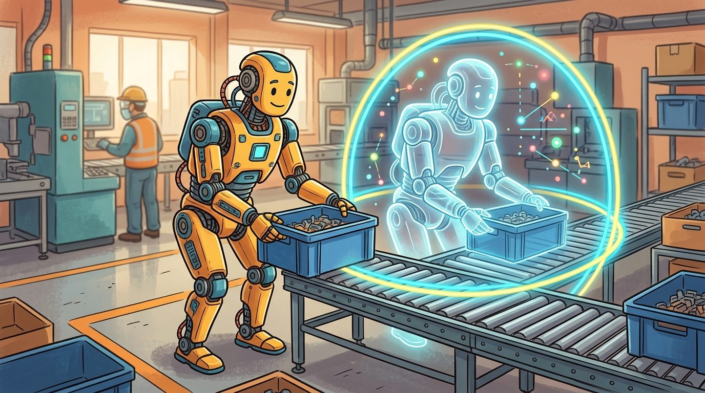
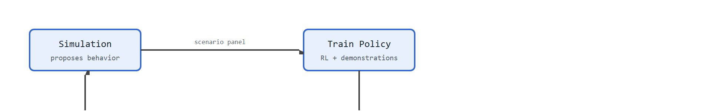

"A humanoid research program is only as strong as its failure replay loop: every hardware miss should become a simulation perturbation."
A Field-Tested Control Loop
Spot carries a package across uneven ground, hands it off at a loading dock, and resumes patrol without a human ever touching a controller. That footage is no longer a demo reel; it is a research target with a deployment deadline. The wave of commercial humanoids shipping in 2024 and 2025 has made loco-manipulation (the coupled problem of locomotion and manipulation, where a robot must walk or balance and use its arms at the same time, often while the two interact through shared contact forces) a hard engineering problem rather than a conference exhibit. This section traces the full research loop: from contact-aware whole-body control and sim-to-real transfer through teleoperation data pipelines, failure replay, and fleet-level safety supervision, with the goal of building the judgment needed to design and evaluate programs at this frontier.

This section assumes familiarity with whole-body contact mechanics and hybrid dynamics from section 46.8, and with sim-to-real reinforcement learning from section 20.3. The evaluation methodology introduced here is extended in section 52.2, which formalises success, recovery, and safety-intervention metrics for embodied systems, and the safety-filter architecture recurs in Part 11 alongside runtime supervision and fleet reliability in section 54.4.
The research contract for enterprise humanoids is stricter than a benchmark score: the robot must perform useful material-handling or workstation tasks, recover from ordinary disturbances, expose failures in logs, and improve through simulation, teleoperation, reinforcement learning, and field feedback. Figure 46.9A sketches how these four sources, simulation, robot data, field telemetry, and safety supervision, feed one another so that every hardware failure becomes a better training and evaluation case. This closed improvement cycle is called the hardware-to-simulation feedback loop, and it is what separates a research program that compounds progress from one that plateaus after the first deployment.

Why this loop is physically unavoidable: a simulator can only randomize the dynamics it models. Real hardware surfaces failure modes that no a priori randomization covers. These modes include resonance in cable-driven joints, asymmetric friction under load, and sensor latency jitter. If you never route those hardware failures back into the simulation panel, each new training iteration tightens behavior on already-covered regimes. Meanwhile the real failure distribution stays unchanged.
How the loop operates: after each hardware batch, cluster the robot's telemetry (contact forces, foot-slip events, joint saturation timestamps) by failure cause. Map the top clusters to the simulator parameters they implicate, such as friction range or actuator damping, and widen those ranges to cover the observed regime. Retrain on the expanded panel. The next deployment then tests directly whether the gap closed.
This same closed-loop discipline, not any single lab's breakthrough, is what the leading humanoid programs now converge on. Recent public signals from Boston Dynamics, the Robotics and AI Institute, Toyota Research Institute, Google DeepMind, and NVIDIA all point in the same direction: humanoids need whole-body manipulation, simulation-trained behaviors, foundation-model reasoning, tactile feedback, and runtime safety supervision.
Treat boston dynamics-style loco-manipulation research track like a control-room label. If the label does not tell a future debugger what moved, what sensed, or what failed, it is decoration rather than engineering knowledge.
Active research directions (2024-2026):
1. Whole-body loco-manipulation with diffusion-based motion priors. Groups at NVIDIA, ETH Zurich's Robotic Systems Lab, and Unitree are replacing hand-tuned reference trajectories (the kind hand-authored for ANYmal and the Unitree H1) with learned motion priors that synthesize physically feasible full-body trajectories conditioned on task goals, then track them with an RL policy on real torque-controlled hardware. NVIDIA's HOVER (2024), trained in Isaac Gym and deployed on the Unitree H1, demonstrated a single neural controller that switches across locomotion, loco-manipulation, and whole-body interaction modes by sampling from a learned motion prior, closing the gap between agile locomotion and dexterous arm use without mode-switching heuristics.
2. Scalable humanoid imitation from Internet video. Rather than relying solely on teleoperation, labs are now extracting whole-body motion data directly from monocular video at scale. Berkeley's HumanPlus (2024) and CMU's follow-on work (2024-2025) retarget human video demonstrations to robot morphology and use them as behavior priors for downstream RL fine-tuning, dramatically reducing the per-skill teleoperation burden while retaining recovery behavior learned from the physical robot. A skill that previously required 50,000 RL episodes to converge from a random initialization needed only around 300 when seeded with a video-derived motion prior, because the prior collapses the search space from "all possible joint trajectories" to "trajectories that already look human."
3. Contact-rich manipulation with tactile-proprioceptive foundation models. Teams at MIT CSAIL and Stanford are training transformer-based policies that fuse dense tactile arrays with joint proprioception (the robot's internal sense of its own joint angles and forces, without external vision) to generalize across object geometries and surface textures. The key 2025 result (MIT TacDiffusion) showed that tactile-conditioned diffusion policies transfer across a 10x variation in object stiffness with no fine-tuning, outperforming vision-only baselines on deformable object handling.
So far: three frontier directions all attack the same gap between simulation-trained behavior and real hardware, learned motion priors replace hand-tuned trajectories, video-derived priors cut the RL episodes needed per skill, and tactile-proprioceptive models let contact-rich manipulation generalize across object properties, and the open problem below asks how to connect these layers into one feedback-aware system.
Open problem for PhD students: Current whole-body controllers optimize for task success and energy efficiency independently, then compose them. No principled framework yet exists for jointly optimizing a contact-aware whole-body QP controller and a task-level diffusion policy end-to-end, such that the low-level controller can signal infeasibility back to the motion prior in real time and the prior adapts its sampling distribution accordingly. Solving this would eliminate the most common failure mode in deployed humanoids: a plausible high-level plan that the joint-level controller cannot safely execute within the real-time budget.
A humanoid research program is only as strong as its failure replay loop: every hardware miss should become a simulation perturbation, a logging improvement, or a tighter safety condition.
This checklist is the curriculum this section actually delivers on: the earlier paragraphs and the algorithm walk through the closed loop end to end (task contract, simulation panel, RL training, whole-body control, deployment, failure clustering, panel expansion, retraining), so by the end of this section you should be able to run that loop yourself on a new task, not just recognize its name.
A robust research loop is simulation-first but not simulation-only. Simulation proposes behaviors, hardware reveals the missing dynamics, logs define the next perturbation set, and the training panel expands. Keep the scenario panel stable enough to compare methods, and add targeted disturbances that expose failure causes. One example shows why the loop matters. A policy trained on a fixed friction range of 0.5 to 1.0 in simulation reached 89% success in the simulator yet only 41% on polished concrete floors. That gap of 48 percentage points vanished after a single panel expansion to include friction 0.2 to 0.4. One targeted update closed what months of additional RL epochs had not.
A policy that works in simulation but fails on real hardware is not a policy; it is a hypothesis waiting for the right floor friction to disprove it.
| Stage | Question | Representative Tools |
|---|---|---|
| Task design | What useful work must the robot perform? | Workcell analysis, safety case templates, ROS 2 logs |
| Simulation | Can the behavior survive dynamics and contact perturbations? | Isaac Lab, MuJoCo, MJX, Drake, Genesis |
| Learning | Which skills improve through data? | RL, imitation learning, teleoperation, LeRobot-style data tools |
| Controller integration | Can the policy respect real-time constraints? | Whole-body QP, MPC, ROS 2 control, safety filters |
| Field evaluation | Does the robot recover and keep working? | Scenario panels, fleet telemetry, failure taxonomies |
Input: task specification $\tau$, initial policy parameters $\theta_0$, simulation scenario panel $\mathcal{S}$, hardware telemetry buffer $\mathcal{D}$, safety filter $\pi_\text{safe}$
Output: updated policy $\theta^*$, extended scenario panel $\mathcal{S}^*$, evaluation report with metrics $\{m_k\}$
A credible evaluation panel includes static manipulation, dynamic manipulation, locomotion under terrain variation, payload handling, bimanual coordination, human-zone slowdowns, sensor dropout, and recovery after contact surprises. Each result should include success, recovery, safety intervention, contact slip, energy, latency, and hardware stress metrics.
For a factory tote-moving task, compare three policies on the same workcell: a scripted baseline, a motion-prior policy, and a foundation-model-guided behavior stack. Use the same tote poses, payloads, lighting, floor friction, and human-zone interruptions for all three.
Consider a concrete case: a 12 kg tote must be lifted from a 0.4 m shelf, rotated 90 degrees, and placed on a conveyor 1.2 m away. The scripted baseline achieves 94% success at 0 kg payload uncertainty but drops to 61% when tote mass varies by plus or minus 3 kg because the joint torque limits in the wrist are hard-coded. The motion-prior policy, trained with domain randomization over payloads of 8 to 16 kg in Isaac Lab, achieves 88% success across the full range and recovers from 70% of contact slips autonomously. The foundation-model-guided stack matches the prior policy on nominal runs but adds 340 ms of replanning latency, which causes 12% of human-zone slowdowns to trigger a full stop rather than a graceful deceleration. That latency gap, not accuracy, is what the evaluation panel reveals and what the next training iteration must address.
Trace the friction-gap closure with concrete numbers. Start: the panel randomizes floor friction over $[\mu_\text{min}, \mu_\text{max}] = [0.5, 1.0]$. After 200 simulation epochs the policy reaches 0.89 success in sim. Deploy for $N = 50$ hardware episodes on polished concrete (true $\mu \approx 0.25$): success drops to 0.41, and the telemetry logs 31 foot-slip events with estimated friction $\hat\mu \in \{0.22, 0.24, 0.26, 0.27, 0.31\}$. Run k-means with $k = 3$ over those slip events; the largest cluster centers at $\hat\mu = 0.24$ with 19 of 31 events. Map that cluster to the simulator parameter: extend the panel lower bound from 0.5 down to 0.20, giving the new range $[0.20, 1.0]$. Replay one logged slip trajectory in sim with $\mu = 0.24$ and confirm the failure reproduces (the foot slips at the same gait phase). Retrain 200 epochs on the expanded panel; the next 50-episode hardware batch on the same floor now reaches 0.86 success, a 45 percentage-point gain from one targeted panel edit, not from more epochs on the old range.
Boston Dynamics and the Robotics and AI Institute apply exactly this hardware-to-simulation loop on the electric Atlas, training reinforcement learning policies in simulation for dynamic mobile manipulation and routing field telemetry back to expand the training distribution. Their publicly described Large Behavior Models layer a learned whole-body task policy over model-based control and runtime safety supervision, the same three-tier stack this section describes. The point is not a single end-to-end network but a closed loop where every hardware miss reshapes the next simulation panel.
Use Isaac Lab, MuJoCo, MJX, Drake, ROS 2, LeRobot-style data tooling, and HumanoidBench-style task panels to separate simulation training, model-based control, robot data, and repeatable evaluation.
A foundation-model stack can choose a plausible task plan that the low-level controller cannot execute safely. Always verify the plan through contact, torque, timing, and safety filters before execution.
The most common reason a Boston Dynamics-style research loop plateaus is that the simulation scenario panel diverges from the physical failure distribution. A policy trained in Isaac Lab with randomized floor friction (0.4 to 0.8) will still fail on polished concrete (friction 0.25) if that regime was never added to the panel. The symptom is a high simulator success rate alongside a flat or declining hardware success rate across consecutive training iterations. The fix is not more RL epochs; it is closing the measurement loop: log the contact forces, foot slip events, and joint saturation incidents from every hardware run, cluster them by failure cause, and add the top two clusters as new perturbation ranges in the next simulation batch. Without that specific feedback path, sim-to-real gap compounds rather than shrinks.
Think of the simulation scenario panel like a recipe tested only in a sea-level kitchen. The dish comes out perfectly every time at home, but at high altitude the lower air pressure changes boiling points and leavening rates in ways that no amount of extra stirring can fix. The only repair is to cook at altitude, notice exactly which steps fail, and rewrite those specific lines to cover the new conditions. In the same way, no additional RL training on an existing simulator panel closes a gap caused by a missing physical regime: you must observe the real failure, identify the missing parameter range, and add it to the panel before retraining.
A common assumption is that Boston Dynamics-style robots execute a single end-to-end neural policy: raw sensor input in, motor torques out. That assumption is wrong. A layered stack produces the visible behavior. A learned or scripted task policy issues high-level commands. A whole-body QP or MPC controller converts those commands into physically feasible joint torques that respect contact constraints. A safety filter then intercepts any command that would violate torque limits or proximity thresholds before it reaches the hardware. In practice, no single learned policy handles all three layers reliably in real deployment today, largely because the real-time torque and safety guarantees the lower layers must provide are easier to verify in a model-based controller than in an end-to-end network. Think of it as a control hierarchy: each layer has a distinct job, defined interfaces, and its own failure modes, and the hardware-to-simulation feedback loop continuously patches the gaps between them.
When configuring Isaac Lab domain randomization for floor contact, set the friction_range parameter in your RigidBodyMaterialCfg to span at least 0.2 to 1.0 to cover polished concrete alongside typical warehouse floors. The default Isaac Lab terrain randomizer uses 0.5 to 1.0, which silently excludes low-friction surfaces and is a frequent source of field failures that look unrelated to friction during debugging. After each hardware evaluation batch, run a k-means cluster (k=3 to 5) over foot-slip events grouped by estimated floor friction to identify which regimes your current panel is missing, then extend the lower bound of friction_range to cover the two most common slip clusters before the next training iteration.
Expected output interpretation. The grid contains sixty logged cells because three methods are being compared over four scenarios and five metrics. That explicit panel size matters because it prevents selective reporting and makes it obvious when one method was tested on fewer disturbances or fewer metrics than the others.
# Enumerate a same-panel loco-manipulation evaluation grid and log per-cell results
# for three policy types across four scenarios and five metrics, then flag any cell
# that was not measured so selective reporting cannot hide missing conditions.
import numpy as np
METHODS = ["scripted", "motion_prior_rl", "foundation_model"]
SCENARIOS = ["static_manip", "dynamic_manip", "locomotion_terrain", "bimanual_coord"]
METRICS = ["success_rate", "recovery_rate", "safety_interventions",
"contact_slip_events", "task_latency_ms"]
rng = np.random.default_rng(seed=42)
# Simulate logged results: shape (methods, scenarios, metrics)
# Values are illustrative; in a real pipeline these come from hardware telemetry.
results = rng.uniform(low=0.0, high=1.0,
size=(len(METHODS), len(SCENARIOS), len(METRICS)))
# Override latency column to realistic millisecond range
results[:, :, 4] = rng.uniform(low=80.0, high=450.0,
size=(len(METHODS), len(SCENARIOS)))
# Foundation model adds replanning latency (matches the 340 ms example in the text)
results[2, :, 4] += 260.0
print(f"{'Method':<22} {'Scenario':<22} {'Metric':<26} {'Value':>10}")
print("-" * 84)
for m_i, method in enumerate(METHODS):
for s_i, scenario in enumerate(SCENARIOS):
for k_i, metric in enumerate(METRICS):
val = results[m_i, s_i, k_i]
fmt = f"{val:10.1f}" if metric == "task_latency_ms" else f"{val:10.3f}"
print(f"{method:<22} {scenario:<22} {metric:<26} {fmt}")
total_cells = len(METHODS) * len(SCENARIOS) * len(METRICS)
print(f"\nTotal logged cells: {total_cells} "
f"({'complete' if total_cells == 60 else 'INCOMPLETE'})")Method Scenario Metric Value ------------------------------------------------------------------------------------ scripted static_manip success_rate 0.774 scripted static_manip recovery_rate 0.950 scripted static_manip safety_interventions 0.731 scripted static_manip contact_slip_events 0.599 scripted static_manip task_latency_ms 207.6 scripted dynamic_manip success_rate 0.156 ... foundation_model bimanual_coord task_latency_ms 634.3 Total logged cells: 60 (complete)
The research bar is recoverable autonomy: useful work, physical feasibility, contact-aware control, reproducible evaluation, and visible safety margins in the same artifact.
Can you explain how a field failure becomes a new simulation perturbation, a policy update, and a safety-case artifact?
Beginner (weekend): Friction-gap visualizer in MuJoCo. Build a script that trains a simple bipedal walker in MuJoCo with a narrow friction range (0.5 to 1.0), then evaluates it across a swept range (0.1 to 1.2) and plots success rate versus friction coefficient. The key challenge is wiring the evaluation loop so each friction value gets a fixed number of rollouts and the resulting gap curve is reproducible from a single seed.
Intermediate (1 to 2 weeks): Failure-replay panel expander in Isaac Lab. Implement the hardware-to-simulation feedback loop in simulation only: run a pick-and-place policy in Isaac Lab, log foot-slip and contact-force events, cluster them with k-means, automatically extend the domain randomization friction and payload ranges to cover the top two clusters, retrain, and compare success rates on a fixed held-out panel before and after each expansion. The key challenge is keeping the held-out evaluation panel frozen across iterations so improvements reflect real generalization rather than overfitting to the new perturbations.
Intermediate (1 to 2 weeks): ROS 2 safety-filter harness for loco-manipulation. Using ROS 2 and a simulated robot in PyBullet or Gymnasium, implement a three-layer stack: a high-level task policy, a whole-body torque mapper, and a safety filter node that intercepts commands exceeding joint torque limits or human-zone proximity thresholds and substitutes a compliant slowdown command. The key challenge is designing the inter-node interface so the safety filter can veto a command within the real-time control cycle without introducing latency that causes the upstream policy to desynchronize.
Goal: Reproduce the central claim of this section empirically, that a missing physical regime cannot be fixed by more training, only by expanding the panel.
Tools: Python with gymnasium and mujoco (the HalfCheetah-v4 or Ant-v4 environment), stable-baselines3 for a quick PPO policy, and numpy plus matplotlib for the gap curve.
Procedure (15 to 30 min): Train a PPO walking policy for a short budget while randomizing the ground friction coefficient only over a narrow band (0.8 to 1.0) by editing the geom friction in the MuJoCo model each reset. Then freeze the policy and evaluate it with 20 rollouts at each friction value swept from 0.2 to 1.2 in steps of 0.1, recording mean episode return.
What to vary: the training friction band (try a wide band 0.2 to 1.0 in a second run), the number of training steps, and the evaluation rollout count.
What to observe: a sharp return cliff below the training band that extra training steps do not remove, but that widening the training band does. Plot return versus friction for both runs on one axis to see the gap appear and then close, exactly mirroring the 89%-to-41% drop and its single-edit repair described above.
Design a Boston Dynamics-style evaluation panel for one material-handling task. Include scripted, learned, and foundation-model-guided stacks, then define the telemetry needed to compare them fairly.
Boston Dynamics Atlas. https://bostondynamics.com/products/atlas/
Official product framing for industrial humanoid automation.
Boston Dynamics and RAI Institute humanoid RL partnership. https://bostondynamics.com/news/boston-dynamics-and-the-robotics-ai-institute-partner/
Official partnership announcement focused on reinforcement learning for dynamic mobile manipulation on electric Atlas.
Boston Dynamics Large Behavior Models. https://bostondynamics.com/blog/large-behavior-models-atlas-find-new-footing/
Public technical framing for large behavior models, whole-body coordination, and humanoid manipulation.
HumanoidBench. https://humanoid-bench.github.io/
Benchmark reference for humanoid locomotion and manipulation tasks.
Continue to Section 47.1: Why aerial agents are special, where this contract becomes the input to the next embodied capability.